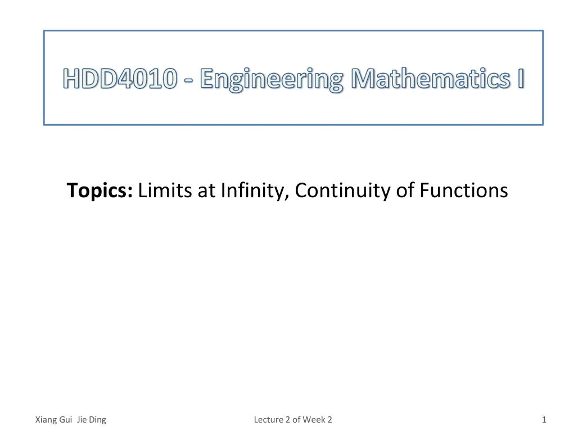

HDD4010 工程数学 I · 第 02 / 08 讲
第 1 章 · 极限与连续性
Limits of Functions and Continuity
所属章节：第 1 章 函数、极限与连续性
资料来源 · 2 项 / 已附 0 项
Topic 2/EMI_Week2_Lecture1.pdf未附原文件Topic 2/EMI_Week2_Lecture2.pdf未附原文件
未附文件仅列原始名称；版本与核对日期由维护者登记。
本节定位
上一讲把函数画在坐标系里，这一讲开始追问：当自变量越来越靠近某点时，函数值往哪里跑？这个「往哪里跑」就是极限（limit）。整门课的两大运算都建在它上面——微分是差商的极限，积分是和式的极限，所以极限没学透，后面所有计算都会退化成「先代入再说」的错误套路。
本讲按两条线推进：第一条从具体问题（自由落体的瞬时速度、圆面积的多边形逼近）引出极限的 ε-δ 定义与运算法则；第二条把「靠近一个点」扩展为「靠近无穷」与「函数值无界」，得到渐近线的完整判据，最后用极限的语言重新定义连续性，并给出闭区间上连续函数的两个存在性定理。
学完本节你应当能够：
- 用 ε-δ 定义证明一个具体的一次函数极限
- 识别 0/0 型并通过对消、有理化把它化简后再求极限
- 用夹逼定理处理振荡因子（sin、cos）与无穷远问题
- 求有理函数在无穷远处的极限，并写出水平、竖直与斜渐近线
- 按三条件判断一点处的连续性，并给间断点分类
- 用介值定理证明方程在给定区间内有根
2.1 微积分的两个基本运算都来自极限
微积分描述量如何变化，靠两个基本运算：微分（differentiation）求函数的瞬时变化率，例如即时速度；积分（integration）由变化率反求函数，例如由速度求位移。两者都建立在同一个概念上：函数的极限。极限是代数与微积分之间的桥梁。
两个现实原型：手机电池的电量与充电功率（功率是电量对时间的变化率，电量是功率的累积）；汽车的速度表与里程表（速度表读瞬时速度，里程表读位移累积）。这两对关系正好对应微分与积分，而第 7 讲的微积分基本定理会把它们严格地连起来。
2.2 从平均速度到瞬时速度
实验表明，石块从静止自由下落，前 t 秒下落距离为 s(t) = 4.9t²（米）。在时间段 [t₁, t₂] 上的平均速度是位移增量除以时间增量：
v̄ = Δs/Δt = (s(t₂) − s(t₁))/(t₂ − t₁)。
(a) 前 2 秒的平均速度：(s(2) − s(0))/2 = 19.6/2 = 9.8 m/s。(b) 从 t = 1 到 t = 2：(19.6 − 4.9)/1 = 14.7 m/s。可见「平均」强烈依赖于所取的时间段。
要得到 t = 1 时刻的瞬时速度，取从 1 开始、长度 h 的时间段 [1, 1+h]：
Δs/Δh = (4.9(1+h)² − 4.9·1²)/h = 9.8 + 4.9h。
| h | 1 | 0.1 | 0.01 | 0.001 | 0.0001 |
|---|---|---|---|---|---|
Δs/Δh | 14.7 | 10.29 | 9.849 | 9.8049 | 9.80049 |
表格清楚地显示：h 越小，比值越靠近 9.8。于是把瞬时速度定义为平均速度当 h → 0 时的极限：
v(t) = lim_{h→0} (4.9(t+h)² − 4.9t²)/h = lim_{h→0} (9.8t + 4.9h) = 9.8t（m/s）。代入 t = 1 得 9.8 m/s，与表格一致。
2.3 圆面积：多边形逼近
半径为 r 的圆内接正 n 边形，其周长 pₙ 与面积 Aₙ 都小于圆的周长 C 与面积 A，但随 n 增大不断逼近。圆心角 ∠POQ = 2π/n，于是弦长 PQ = 2r sin(π/n)，O 到 PQ 的距离为 r cos(π/n)。
单个三角形面积 = (1/2)(2r sin(π/n))(r cos(π/n)) = r² sin(π/n) cos(π/n)，故
pₙ = 2rn sin(π/n)，Aₙ = n r² sin(π/n) cos(π/n) = (n/2) r² sin(2π/n)。
令 n → ∞，利用 lim_{θ→0} sin θ/θ = 1 与 cos(π/n) → 1：
lim pₙ = 2πr · lim [sin(π/n)/(π/n)] = 2πr = C，lim Aₙ = πr² · lim [sin(2π/n)/(2π/n)] · cos(π/n) = πr² = A。
这个例子说明：曲线围成的量可以被「越来越细的直线图形」逼近，逼近的精确含义就是极限。第 6 讲与第 7 讲把同一思想用在任意函数上，就得到定积分。
2.4 极限的 ε-δ 定义
称函数 f 在 x 趋于 a 时以 L 为极限，记 lim_{x→a} f(x) = L，如果：对每个 ε > 0，都存在 δ > 0，使得
0 < |x − a| < δ ⟹ |f(x) − L| < ε。
逐字读这句话：不管你把允许误差 ε 设得多小，我都能找到一个「挖去 a 点的小区间」，只要 x 落在这个区间里（且不等于 a），函数值就与 L 相差不到 ε。也就是说，f(x) 可以通过让 x 足够靠近 a 而任意接近 L。
三个细节必须记牢：① 0 < |x − a| 表示不考虑 x = a 本身，所以极限是否存在与 f(a) 是否有定义、取值多少完全无关；② δ 依赖于 ε（通常写成 δ = δ(ε)），不是固定常数；③ 定义只要求「存在这样的 δ」，不要求最大的 δ。
源文件例 1：证明 lim_{x→4} (3x − 1) = 11。取 f(x) = 3x − 1、a = 4、L = 11。对任意 ε > 0，需要找 δ 使 0 < |x − 4| < δ ⟹ |3x − 12| < ε。而 |3x − 12| = 3|x − 4|，所以只要 |x − 4| < ε/3 即可。于是取 δ = ε/3，条件即成立。
2.5 极限与函数在该点的值无关
源文件例 2：考察 f(x) = (x² − 1)/(x − 1) 在 x = 1 附近的行为。f 在 x = 1 无定义，但对 x ≠ 1 有
f(x) = (x−1)(x+1)/(x−1) = x + 1，故 lim_{x→1} f(x) = lim_{x→1}(x+1) = 2。
虽然 f(1) 不存在，极限却存在，并且等于 2。这个「洞」正是第 2.16 节「可去间断」的原型：只要补充定义 f(1) = 2，函数就在 1 处连续了。
2.6 单侧极限与双侧极限的存在性
左极限：lim_{x→a⁻} f(x)，只考虑 x < a；右极限：lim_{x→a⁺} f(x)，只考虑 x > a。核心结论：
lim_{x→a} f(x) = L ⟺ lim_{x→a⁻} f(x) = lim_{x→a⁺} f(x) = L。
源文件例子：sgn(x) 在 0 处，左极限 −1、右极限 1，两者不等，所以 lim_{x→0} sgn(x) 不存在。同理 |x|/x 在 0 处左右极限分别为 −1 与 1，极限不存在。
|·| 的表达式在零点；③ 含 √(x − a) 或 ln(x − a) 的表达式在端点（一侧根本没定义）。2.7 极限运算法则
设 lim_{x→a} f(x) = A、lim_{x→a} g(x) = B，c 为常数，则：
- 和差：
lim (f ± g) = A ± B - 乘积：
lim (fg) = AB - 常数倍：
lim (cf) = cA - 商：
lim (f/g) = A/B，要求B ≠ 0 - 幂：
lim f(x)^{m/n} = A^{m/n}，要求 n 为偶数时A > 0，且m/n < 0时A ≠ 0
这些法则对左极限、右极限同样成立。和法则的证明只需把定义套一遍：把 |(f+g) − (A+B)| 拆成 |f−A| + |g−B|，再用三角不等式，取两个 ε/2 对应的 δ 的较小者。
B = 0 时法则失效，必须回到 0/0 型的化简流程。幂法则在「偶次根 + 负底数」时会失效，例如 lim_{x→0} √(x²) 不能直接套用 √(A) 的形式，要小心符号。2.8 多项式与有理函数的极限
多项式在任意实数处都可以「直接代入」：lim_{x→a} P(x) = P(a)。例如 lim_{x→3}(2x² − 5x + 1) = 2·9 − 5·3 + 1 = 4——源文件此处把结果印成 10，按公式复算应为 4，属课件笔误。
有理函数在分母不为零处也直接代入：lim_{x→a} P(x)/Q(x) = P(a)/Q(a)（Q(a) ≠ 0）。唯一例外是 P(a) = Q(a) = 0，此时必须先化简表达式再取极限。
0/0 型的两条化简路径。① 因式分解后约去公因子；② 含根号时分子分母同乘共轭因式。源文件两个例子：
lim_{x→−2} (x² + x − 2)/(x² + 5x + 6)：两者在 −2 处都为 0。x²+x−2 = (x+2)(x−1)，x²+5x+6 = (x+2)(x+3)，约去 x+2 后得 lim (x−1)/(x+3) = (−3)/1 = −3。
lim_{x→4} (√x − 2)/(x² − 16)：同乘共轭 (√x + 2)，分子变成 x − 4，与分母的 x − 4 约去，得 lim 1/((x+4)(√x+2)) = 1/(8·4) = 1/32。
k/0（k ≠ 0）才是「不存在（趋于 ±∞）」。把 0/0 直接当作 0 或 1 是最常见的失分。2.9 夹逼定理
若在 a 的某个去心邻域内 g(x) ≤ f(x) ≤ h(x)，且 lim_{x→a} g(x) = lim_{x→a} h(x) = L，则 lim_{x→a} f(x) = L。直观上：f 被两条都往 L 收拢的曲线夹住，只能跟着去 L。
源文件例 3：f(x) = sin x / x（x ≠ 0），求 lim_{x→∞} f(x)。因为 −1 ≤ sin x ≤ 1，当 x > 0 时三边除以 x 得 −1/x ≤ sin x/x ≤ 1/x；两端极限都是 0，故 lim_{x→∞} sin x/x = 0。
源文件例：f(x) = x² sin(1/x)（x ≠ 0）。因为 −1 ≤ sin(1/x) ≤ 1，两边乘 x² ≥ 0 得 −x² ≤ x² sin(1/x) ≤ x²；两端都趋于 0，故 lim_{x→0} x² sin(1/x) = 0。注意这里不能用乘积法则，因为 lim sin(1/x) 不存在。
sin、cos 的变体），先去估计它的界，再用「有界 × 趋于 0」夹逼。这是 sin θ/θ → 1 证明的技术基础（第 3 讲）。2.10 极限不存在的两种典型
- 左右极限不等：
sgn(x)在 0 处（左 −1、右 1），|x|/x在 0 处 - 无限振荡：
sin(1/x)在 0 处，函数值在 −1 与 1 之间来回跳，不趋向任何单个 L
第三种情形是「趋于无穷」，严格说来极限也不存在（因为 ∞ 不是数），但为了描述方便，我们仍写成 lim = ∞，下一节专门处理。
2.11 无穷极限与竖直渐近线
若函数值可以任意大地变正（或变负），称它有无穷极限。lim_{x→0} 1/x² = ∞：从两侧靠近 0 时函数值都是正且无界增大，所以严格意义上极限不存在，但写成 ∞ 记录了「往哪个方向无界」这一信息。
相比之下 1/x 的两侧方向不同：lim_{x→0⁺} 1/x = ∞，lim_{x→0⁻} 1/x = −∞，所以 lim_{x→0} 1/x 既不是 ∞ 也不是 −∞，彻底不存在。
竖直渐近线：直线 x = a 是 y = f(x) 的竖直渐近线（vertical asymptote），只要下列之一成立：lim_{x→a⁻} f(x) = ±∞ 或 lim_{x→a⁺} f(x) = ±∞。注意「至少一侧」即可，不要求两侧同号。
2.12 无穷远处的极限与水平渐近线
lim_{x→∞} f(x) = L 表示 x 无限增大时 f(x) 任意接近 L；x → −∞ 同理。此时直线 y = L 是水平渐近线（horizontal asymptote）。关键细节：左右两侧可以有不同的水平渐近线。
源文件例子：f(x) = x/√(x² + 1)。把分子分母同除以 |x|（注意 √(x²) = |x|，不是 x）：
当 x > 0：f(x) = 1/√(1 + 1/x²) → 1；当 x < 0：f(x) = −1/√(1 + 1/x²) → −1。
所以 lim_{x→∞} f = 1、lim_{x→−∞} f = −1，右侧水平渐近线 y = 1，左侧 y = −1。
x → −∞ 时，把 √(x²) 写成 x 会让整个符号翻转，导致把 −1 算成 +1。正确做法是先写成 |x|，再按 x 的正负拆绝对值。2.13 有理化技巧：√(x² − x) − x
求 lim_{x→∞} (√(x² − x) − x)。直接看是 ∞ − ∞ 型，同乘共轭 (√(x²−x) + x)：
(x² − x − x²)/(√(x²−x) + x) = −x/(√(x²−x) + x)。分子分母同除以 x（此时 x > 0，√(x²−x)/x = √(1 − 1/x)）：
= −1/(√(1 − 1/x) + 1) → −1/2。
结论 −1/2 与源文件答案一致。这一步说明：∞ − ∞ 型不一定发散，同乘共轭后可能得到有限值。
2.14 多项式在无穷远处：最高次项主导
设 P(x) = aₙxⁿ + ⋯ + a₀（aₙ ≠ 0），把最高次项提出来：P(x) = aₙxⁿ(1 + aₙ₋₁/(aₙx) + ⋯ + a₀/(aₙxⁿ))。当 x → ±∞ 时括号里趋于 1，所以
lim_{x→±∞} P(x) = lim aₙxⁿ，符号由 aₙ 与 xⁿ 共同决定。
源文件例子：lim_{x→∞}(x³ − 5x² + 2) = ∞，lim_{x→−∞}(x³ − 5x² + 2) = −∞（首项 x³ 在负无穷处为负）；lim_{x→±∞}(−3x⁴ − x³ + x) = −∞（偶次首项且系数为负，两侧都是 −∞）。
2.15 有理函数在无穷远处与三条渐近线判据
设 f(x) = Pₘ(x)/Qₙ(x)，分子次数 m、分母次数 n，比较两者首项系数 aₘ、bₙ：
| 次数关系 | 极限 | 渐近线 |
|---|---|---|
m < n | lim_{x→±∞} f = 0 | 双侧水平渐近线 y = 0 |
m = n | lim f = aₘ/bₙ | 双侧水平渐近线 y = aₘ/bₙ |
m > n | lim f = ±∞ | 无水平渐近线 |
m = n + 1 | lim f = ±∞ | 双侧斜渐近线 y = ax + b |
m > n + 1 | lim f = ±∞ | 无渐近线（趋于更高次曲线） |
斜渐近线的求法：做多项式除法 P/Q = (ax + b) + R/Q，其中 deg R < n，于是 f(x) − (ax + b) = R/Q → 0，直线 y = ax + b 就是斜渐近线。
源文件三个例子：(a) lim_{x→±∞} (2x² + x)/(3x² − 7) = 2/3，水平渐近线 y = 2/3；(b) lim_{x→±∞} (5x − 9)/(2x³ + 3) = 0，水平渐近线 y = 0；(c) lim_{x→±∞} (x³ − x²)/(x² + 1)：除法得 = x − 1 + (1 − x)/(x² + 1)，故 x → ∞ 时趋于 ∞、x → −∞ 时趋于 −∞，斜渐近线 y = x − 1。
竖直渐近线：先把分子分母的公因子约掉，剩下的分母零点处就是竖直渐近线。例如 (2x² − 7x + 3)/(x² − 9) = (2x−1)(x−3)/((x−3)(x+3)) = (2x−1)/(x+3)（x ≠ 3），只有 x = −3 是竖直渐近线，x = 3 是「洞」；水平渐近线 y = 2；在 x → −3⁺ 时分子 2x−1 → −7、分母 → 0⁺，故极限为 −∞，而 x → −3⁻ 时为 +∞。
2.16 连续性的三条件与间断点分类
函数 f 在 x = c 处连续（continuous），当且仅当以下三条同时成立：① f(c) 有定义；② lim_{x→c} f(x) 存在；③ lim_{x→c} f(x) = f(c)。任一条不成立就叫在 c 处间断（discontinuous）。
源文件的四个图形正好对应四种失败方式：(a) f(c) 无定义；(b) 极限存在但不等于 f(c)（洞）；(c) 极限不存在（左右不等）；(d) 极限不存在且 f(c) 也无定义。
保连续运算：若 f、g 在 c 连续，则 f ± g、fg、kf、f/g（g(c) ≠ 0）、f^{m/n}（n 为偶数时要求 f(c) > 0）都在 c 连续。
复合的连续性：若 g 在 c 连续、f 在 g(c) 连续，则 f ∘ g 在 c 连续，且 lim_{x→c} f(g(x)) = f(lim_{x→c} g(x))。源文件例子：g(x) = x² + 1 在 −1 连续，f(u) = √u 在 g(−1) = 2 连续，故 √(x²+1) 在 −1 连续。
单侧连续：右连续指 lim_{x→c⁺} f(x) = f(c)，左连续指 lim_{x→c⁻} f(x) = f(c)；f 在 c 连续 ⟺ 既左连续又右连续。
源文件例子：Heaviside 函数 H(x) = 1（x ≥ 0）、0（x < 0）。lim_{x→0⁺} H = 1 = H(0)，故右连续；lim_{x→0⁻} H = 0 ≠ H(0)，故左不连续，因此 H 在 0 处不连续。
源文件分段例子：f(x) = x²（x ≤ 1）、2x − 1（x > 1），检查 x = 1：左极限 lim x² = 1，右极限 lim (2x−1) = 1，且 f(1) = 1，三者相等，故在 1 处连续。
间断点四分类（第一类：两个单侧极限都存在；第二类：至少一侧不存在）：
| 类型 | 特征 | 典型例子 |
|---|---|---|
| 可去 removable | 左右极限存在且相等，但 f(c) 无定义或不等 | (x²−1)/(x−1) 在 x = 1 |
| 跳跃 jump | 左右极限都存在但不相等 | sgn(x) 在 x = 0 |
| 无穷 infinite | 至少一侧极限为 ±∞（竖直渐近线） | 1/x 在 x = 0 |
| 振荡 oscillating | 极限不存在且不为无穷 | sin(1/x) 在 x = 0 |
2.17 区间上的连续性与两个存在性定理
函数在区间上连续指在区间内每点连续；对闭区间 [a, b]，还要求在左端点右连续、在右端点左连续。例如 √x 在 [0, ∞) 连续：在 0 处 lim_{x→0⁺} √x = 0 = √0（右连续），在每点 x₀ > 0 处 lim √x = √x₀。
常见连续函数：多项式（处处连续）；有理函数（在其定义域上连续）；有理幂 x^{m/n}（在定义域上）；六个三角函数（在定义域上，间断点只出现在分母为零处）；绝对值函数（处处连续）。
最值定理（Extreme Value Theorem，也叫 Max-Min Theorem）：若 f 在闭区间 [a, b] 上连续，则 f 在该区间上取到最大值 M 与最小值 m。三个条件缺一不可，源文件给了三个反例：
- 开区间
f(x) = x在(0, 1)：连续但无最大也无最小（端点被挖掉） - 不连续
f(x) = x（0 ≤ x < 1）、f(x) = 0（x = 1）：在[0, 1]上无最大值 - 无界区间
f(x) = 1/x在(0, 1]：连续但无最大值
介值定理（Intermediate Value Theorem）：若 f 在 [a, b] 上连续，k 介于 f(a) 与 f(b) 之间，则存在 c ∈ (a, b) 使 f(c) = k。几何上：连续曲线要从一个高度走到另一个高度，必须经过中间每个高度。
源文件应用：证明 x³ − x − 1 = 0 在 [1, 2] 内有解。令 f(x) = x³ − x − 1；f(1) = −1 < 0，f(2) = 5 > 0；f 处处连续，故在 [1, 2] 连续；由介值定理（取 k = 0），存在 c ∈ (1, 2) 使 f(c) = 0。
原版图页（源 PDF 插图页）



拓展深化 2.0 极限的本质形式化：柯西 ε-δ 语言与严谨证明
从动态直觉过渡到静态严格集合刻画：对任意给定的任意小容差 $\epsilon>0$，如何通过逆向解不等式构造出自变量受控邻域 $\delta = \min(1, \frac{\epsilon}{M})$。
【定义】：我们称 $\\lim_{x \\to c} f(x) = L$，如果对于任意给定的正数 $\\varepsilon > 0$，都存在一个正数 $\\delta > 0$，使得当自变量 $x$ 满足：
$$0 < |x - c| < \\delta \\implies |f(x) - L| < \\varepsilon$$
【严谨 ε-δ 证明典范】：证明 $\\lim_{x \\to 3} (2x^2 - 5x) = 3$。
证明构思与分析：需控制 $|(2x^2 - 5x) - 3| = |2x + 1| |x - 3| < \\varepsilon$。我们需要先限制 $|x - 3|$ 使得因子 $|2x + 1|$ 具备一个有限的上界。先设定一个初始探测步长 $\\delta_1 = 1$。当 $|x - 3| < 1$ 时，$-1 < x - 3 < 1 \\implies 2 < x < 4$。因此 $5 < 2x + 1 < 9 \\implies |2x + 1| < 9$。此时有：
$$|2x + 1| |x - 3| < 9 |x - 3|$$
为了使乘积小于 $\\varepsilon$，只需额外要求 $|x - 3| < \\frac{\\varepsilon}{9}$。因此我们取 $\\delta = \\min\\left(1, \\frac{\\varepsilon}{9}\\right)$。
正式证明论述：对任意给定的 $\\varepsilon > 0$，取 $\\delta = \\min\\left(1, \\frac{\\varepsilon}{9}\\right) > 0$。当 $0 < |x - 3| < \\delta$ 时，由于 $\\delta \\le 1$，必有 $|2x + 1| < 9$；同时由于 $\\delta \\le \\frac{\\varepsilon}{9}$，必有 $|x - 3| < \\frac{\\varepsilon}{9}$。两式相乘得：
$$|(2x^2 - 5x) - 3| = |2x + 1| |x - 3| < 9 \\cdot \\frac{\\varepsilon}{9} = \\varepsilon$$
证毕。这就是柯西形式化分析方法的核心：通过不等式放缩将任意给定的 $\\varepsilon$ 逆向映射构造出 $\\delta$。
拓展深化 2.5.1 夹逼定理（Squeeze Theorem）与第一重要极限
在单位圆中由三角形面积小于扇形面积小于外切三角形面积建立 $\cos\theta < \frac{\sin\theta}{\theta} < 1$，由夹逼定理完成首要超越极限证明。
在第一象限单位圆内，当 $0 < \\theta < \\frac{\\pi}{2}$ 时，显然有面积包合关系：
$$\\text{Area}(\\triangle OAP) < \\text{Area}(\\text{Sector } OAP) < \\text{Area}(\\triangle OAT)$$
代入公式：$\\frac{1}{2} \\cdot 1 \\cdot \\sin\\theta < \\frac{1}{2} \\cdot 1^2 \\cdot \\theta < \\frac{1}{2} \\cdot 1 \\cdot \\tan\\theta \\implies \\sin\\theta < \\theta < \\frac{\\sin\\theta}{\\cos\\theta}$。各边同除以 $\\sin\\theta > 0$ 并取倒数，不等号变向：
$$\\cos\\theta < \\frac{\\sin\\theta}{\\theta} < 1$$
由于 $\\lim_{\\theta \\to 0^+} \\cos\\theta = 1$ 且 $\\lim_{\\theta \\to 0^+} 1 = 1$，由夹逼定理，右极限为 1。由于 $\\frac{\\sin(-\\theta)}{-\\theta} = \\frac{\\sin\\theta}{\\theta}$ 为偶函数，左极限亦为 1。故严谨得证：$\\lim_{x \\to 0} \\frac{\\sin x}{x} = 1$。
| English | 中文 | 说明 / 例句 |
|---|---|---|
| limit of a function | 函数极限 | lim_{x→a} f(x) = L if f(x) can be made arbitrarily close to L. |
| epsilon-delta definition | ε-δ 定义 | For every ε > 0 there is δ > 0 such that 0 < |x−a| < δ forces |f(x)−L| < ε. |
| difference quotient | 差商 | The average rate of change (f(x+h) − f(x))/h. |
| instantaneous velocity | 瞬时速度 | The limit of average velocity as the time interval shrinks to zero. |
| one-sided limit | 单侧极限 | Left and right limits; the two-sided limit exists iff they agree. |
| indeterminate form 0/0 | 0/0 未定式 | Substitution gives 0/0; simplify by factoring or rationalizing first. |
| rationalizing | 有理化 | Multiply by the conjugate to remove a square-root difference. |
| squeeze theorem | 夹逼定理 | If g ≤ f ≤ h and both bounds tend to L, then f tends to L. |
| infinite limit | 无穷极限 | Values grow without bound; ∞ is a description, not a number. |
| vertical asymptote | 竖直渐近线 | x = a where a one-sided limit is ±∞. |
| horizontal asymptote | 水平渐近线 | y = L where f(x) → L as x → ±∞. |
| oblique asymptote | 斜渐近线 | y = ax + b appearing when deg P = deg Q + 1. |
| continuity at a point | 点连续 | f(c) defined, the limit exists, and the two are equal. |
| removable discontinuity | 可去间断 | One-sided limits agree but f(c) is missing or mismatched. |
| intermediate value theorem | 介值定理 | A continuous function on [a, b] takes every value between f(a) and f(b). |
(a) (s(2) − s(0))/(2 − 0) = (19.6 − 0)/2 = 9.8 m/s。
(b) (s(2) − s(1))/(2 − 1) = (19.6 − 4.9)/1 = 14.7 m/s。两者不同，说明「平均」不能代表「瞬时」。
(c) 取区间 [1, 1+h]：Δs/Δh = (4.9(1+h)² − 4.9)/h = (9.8h + 4.9h²)/h = 9.8 + 4.9h。
表中 h = 1, 0.1, 0.01, 0.001, 0.0001 时比值依次为 14.7、10.29、9.849、9.8049、9.80049，趋于 9.8。
令 h → 0：lim (9.8 + 4.9h) = 9.8 m/s。一般地，v(t) = lim (4.9(t+h)² − 4.9t²)/h = 9.8t，即 v = gt（g = 9.8），与物理结论一致。
分析：要证对每个 ε > 0 存在 δ > 0，使 0 < |x − 4| < δ ⟹ |(3x−1) − 11| < ε。
化简目标不等式：|3x − 12| = 3|x − 4| < ε ⟺ |x − 4| < ε/3，可见 δ 应取 ε/3。
正式书写：任给 ε > 0，取 δ = ε/3。则当 0 < |x − 4| < δ 时，有 |(3x−1) − 11| = 3|x − 4| < 3δ = ε。由定义，lim_{x→4}(3x−1) = 11。
方法迁移：线性函数 f(x) = mx + b 的证明永远形如 |f(x) − L| = |m||x − a|，取 δ = ε/|m|。非线性情形需要先限制 δ ≤ 1 把 |x − a| 的因子估成常数，这属于后续课程内容。
(a) 代入 x = −2：分子 4 − 2 − 2 = 0，分母 4 − 10 + 6 = 0，是 0/0。分解：分子 (x+2)(x−1)，分母 (x+2)(x+3)。约去 x+2（x ≠ −2 时合法）：
lim (x−1)/(x+3) = (−2−1)/(−2+3) = −3。
(b) 代入 x = 4：√4 − 2 = 0、16 − 16 = 0，是 0/0。同乘共轭 (√x + 2)：
(√x − 2)(√x + 2)/((x−4)(x+4)(√x + 2)) = (x − 4)/((x−4)(x+4)(√x+2)) = 1/((x+4)(√x+2))。
代入 x = 4：1/(8 · 4) = 1/32。
分辨技巧：多项式型 0/0 先分解；含根号型 0/0 先乘共轭；两者都含根号且含多项式时，先有理化再分解。
(a) 是 ∞ − ∞ 型。同乘共轭：(x² − x − x²)/(√(x²−x) + x) = −x/(√(x²−x) + x)。分子分母同除 x（x > 0）：−1/(√(1 − 1/x) + 1) → −1/2。
(b) 次数 m = 3、n = 2，m = n + 1，故有斜渐近线。做除法：x³ − x² = (x − 1)(x² + 1) + (1 − x)，即 f(x) = x − 1 + (1 − x)/(x² + 1)。
因为 (1−x)/(x²+1) → 0，斜渐近线是 y = x − 1；且 lim_{x→∞} f = ∞、lim_{x→−∞} f = −∞。同时 x² + 1 > 0 无实零点，故没有竖直渐近线。
验算：取 x = 10，f(10) = 900/101 ≈ 8.91，而 x − 1 = 9，差 ≈ 0.09，随 x 增大而趋于 0，符合斜渐近线的定义。
- 求
lim_{x→3}(2x² − 5x + 1)。 - 求
lim_{x→−2}(x² + 4x + 4)/(x + 2)。 - 求
lim_{x→2}(1/(x + 2) + 1/(x² − 4))，并说明理由。 - 求
y = (2x² − 7x + 3)/(x² − 9)的全部渐近线，并写出x → −3⁺时的极限。 - 判断
f(x) = (x² − 4)/(x − 2)（x ≠ 2）、f(2) = 3在x = 2处是否连续；若不连续，指出类型并给出修补方式。 - 证明方程
x³ + x − 3 = 0在[1, 2]内至少有一个根。
答案与思路
1. 多项式直接代入：2·9 − 15 + 1 = 4。
2. 代入得 0/0。分子 (x+2)²，约去一个 x+2 后为 x+2，代入 −2 得 0。
3. x → 2 时第一项 → 1/4；第二项 1/(x²−4) = 1/((x−2)(x+2))，分母趋于 0 而分子为 1，故趋于 ±∞（右侧 +∞、左侧 −∞）。两项之和无界，故 极限不存在（属于无穷型间断）。
4. 分解：(2x−1)(x−3)/((x−3)(x+3)) = (2x−1)/(x+3)，x ≠ 3。水平渐近线 y = 2（次数相等，首项系数比 2/1）；竖直渐近线 x = −3（x = 3 是可去的洞）；无斜渐近线。x → −3⁺：分子 → −7，分母 → 0⁺，故极限 −∞。
5. lim_{x→2}(x²−4)/(x−2) = lim (x+2) = 4，但 f(2) = 3 ≠ 4，故不连续；属于可去间断。修补方式：把 f(2) 重新定义为 4。
6. 令 f(x) = x³ + x − 3，多项式故在 [1, 2] 连续；f(1) = −1 < 0，f(2) = 7 > 0；由介值定理存在 c ∈ (1, 2) 使 f(c) = 0。要点：必须写出「连续」「端点异号」「介值定理」三句话。
∞ − ∞ 就同乘共轭或通分，看到 0 · ∞ 就改写成分式；原样代入只会得到无意义的符号。x → −∞ 时符号必须翻转，否则 x/√(x²+1) 的左极限会被错算成 +1。x ≠ a 成立；该点要么是「洞」（可去间断），要么还要保留竖直渐近线，判断渐近线时必须先约分再找分母零点。方法与清单
求极限四步
- 直接代入：能算出有限值就结束（多项式、分母非零的有理函数）
- 判断类型：0/0 则分解或有理化；∞/∞ 则比较次数；∞−∞ 则共轭或通分；0·∞ 则改写成分式
- 含振荡因子（sin、cos）时改用夹逼定理，先写出界
- 分段点、含绝对值或根号端点处，分左右极限各自计算，再比较是否相等
求全部渐近线（三步）
- 先约去分子分母的公因子，剩下的分母零点给出竖直渐近线
- 比较分子分母次数：m < n 或 m = n 给水平渐近线；m = n + 1 做除法得斜渐近线
- 分别对 x → ±∞ 检查，两侧可以有不同的水平（或斜）渐近线
判断连续性并分类（三步）
- 算
f(c)：无定义则已可判定不连续（再看极限判断是可去、无穷还是振荡） - 算左右极限：都存在但不相等 → 跳跃；至少一侧为 ±∞ → 无穷；不存在且非无穷 → 振荡
- 左右极限相等但不等于
f(c)→ 可去，说明如何重新定义f(c)即可修补
| 源文件 | 页码 | 覆盖知识点 |
|---|---|---|
| Topic 2/EMI_Week2_Lecture1.pdf | p2 | 微分与积分的定义、极限作为共同基础 |
| Topic 2/EMI_Week2_Lecture1.pdf | p3–p7 | 平均速度、瞬时速度、差商与表格逼近、v = 9.8t 的推导 |
| Topic 2/EMI_Week2_Lecture1.pdf | p8–p10 | 内接正多边形逼近圆周长与圆面积 |
| Topic 2/EMI_Week2_Lecture1.pdf | p11–p14 | ε-δ 定义、lim(3x−1)=11 的证明、(x²−1)/(x−1) 的极限 |
| Topic 2/EMI_Week2_Lecture1.pdf | p15–p16 | 单侧极限、双侧极限存在性、sgn 在 0 处的极限 |
| Topic 2/EMI_Week2_Lecture1.pdf | p17–p21 | 极限四则与幂法则、多项式与有理函数、0/0 型的分解与有理化 |
| Topic 2/EMI_Week2_Lecture1.pdf | p22–p25 | 夹逼定理、sin x/x 在无穷处、x² sin(1/x) 在 0 处 |
| Topic 2/EMI_Week2_Lecture1.pdf | p26–p27 | 极限不存在的两类典型（单侧不等、无限振荡） |
| Topic 2/EMI_Week2_Lecture2.pdf | p2–p6 | 无穷极限、竖直渐近线、1/x² 与 1/x 的单双侧行为 |
| Topic 2/EMI_Week2_Lecture2.pdf | p7–p10 | 无穷远极限、水平渐近线、x/√(x²+1)、√(x²−x)−x 的有理化 |
| Topic 2/EMI_Week2_Lecture2.pdf | p11–p17 | 多项式最高次项主导、有理函数三类次数关系与斜渐近线 |
| Topic 2/EMI_Week2_Lecture2.pdf | p18–p19 | 渐近线总判据、(2x²−7x+3)/(x²−9) 的完整分析 |
| Topic 2/EMI_Week2_Lecture2.pdf | p20–p29 | 连续三条件、四个反例图、保连续运算、复合与单侧连续、分段检查、间断点分类、区间连续 |
| Topic 2/EMI_Week2_Lecture2.pdf | p30–p33 | 常见连续函数、最值定理三个反例、介值定理与 x³−x−1 的根 |
| （跳过）Topic 2/Lecture One.html、Lecture Two.html 与 _info/*.html | — | 均为 Moodle 登录页快照，无可读正文 |
| （拓展） | — | 把 0·∞ 与 ∞−∞ 的改写规则系统化、斜渐近线的除法判定为衔接性补充，源文件以例题形式出现 |